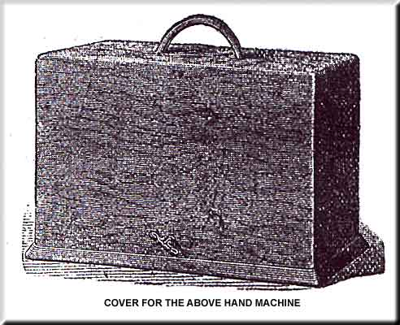

The foregoing instructions are equally applicable to the No. 8 Hand Machine, with the exception of the following:--
To Work the Spooler -- Turn the pinion of the spooler, so that it may run in the teeth of the driving wheel. To release the spooler, lift it up slightly and turn the pinion away from the wheel.
To Fix the Driving Handle -- When the Hand Machine is uncovered, The Driving Handle will be found folded inwards; bring it into its proper position and fix by turning upwards the spring at the back of it. NOTE -- The spring must be turned downwards before the handle can be folded inwards again.
